Рацион · Light
A показывает состав приёмов сразу, B сохраняет кольцо БЖУ и временную линию.
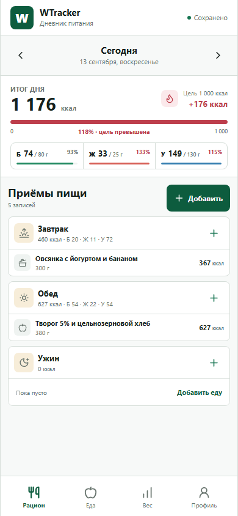
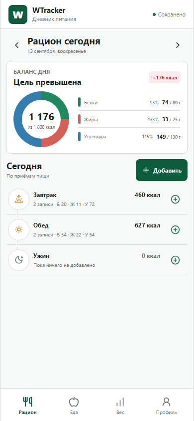
Рацион · Dark
Те же состояния в тёмной теме.
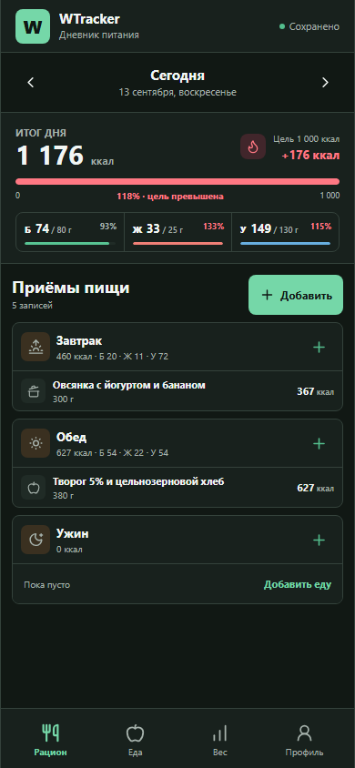
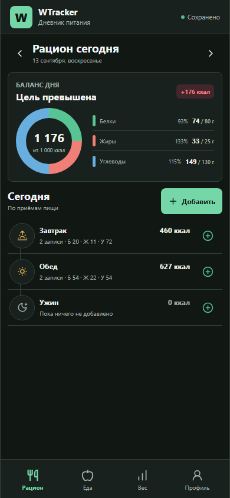
Добавление еды
A начинает с поиска источника, B показывает следующий шаг с порцией и приёмом пищи.
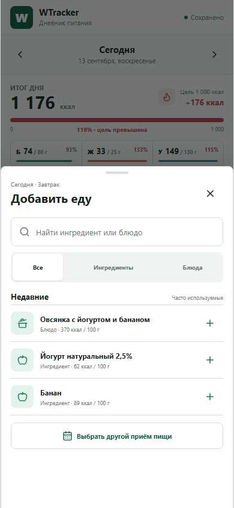
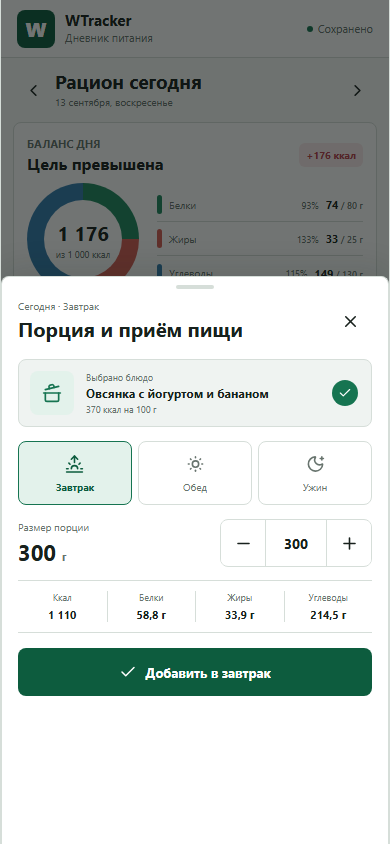
Еда · Light
A ориентирован на плотный каталог, B — на пользовательские папки и недавние позиции.
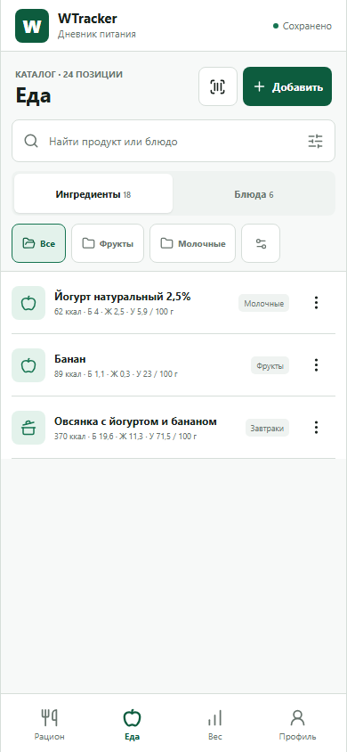
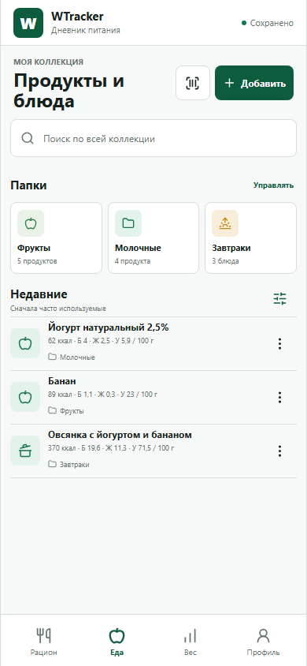
Еда · Dark
Каталог и коллекция в тёмной теме.
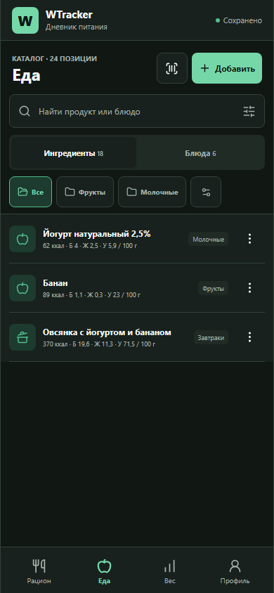
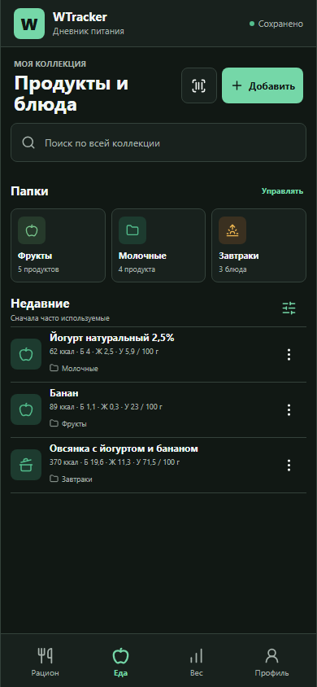
Вес · Light
A оформляет график как точную рабочую панель, B даёт ему больше визуального пространства.
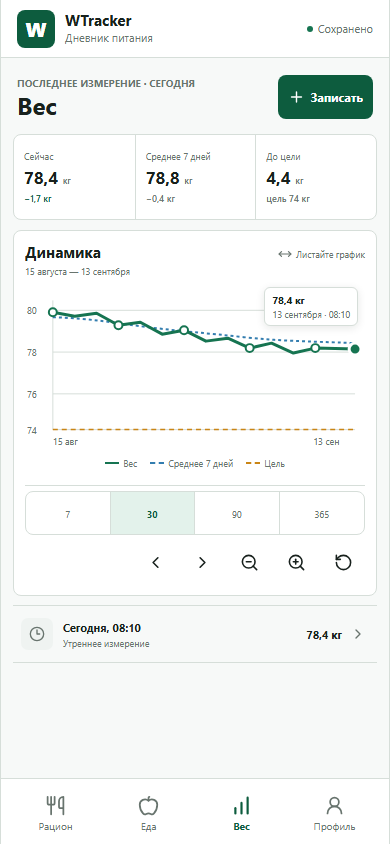
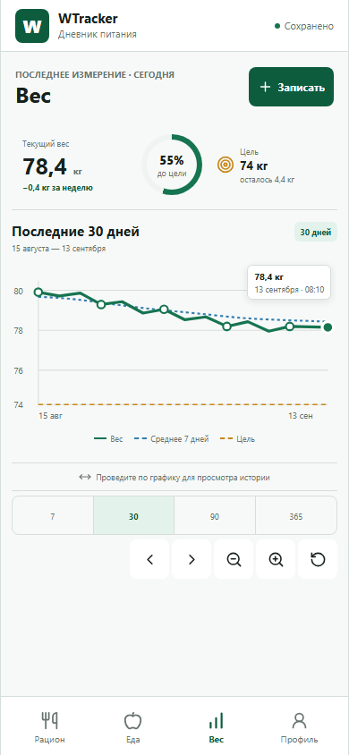
Вес · Dark
Обе композиции сохраняют подписи линий и доступные controls жестов.
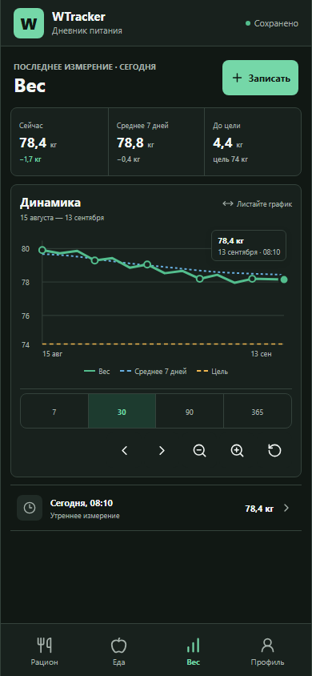
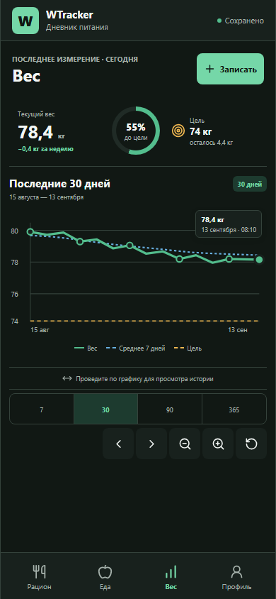
Профиль · Light
A использует подробный список, B группирует настройки по пользовательским задачам.
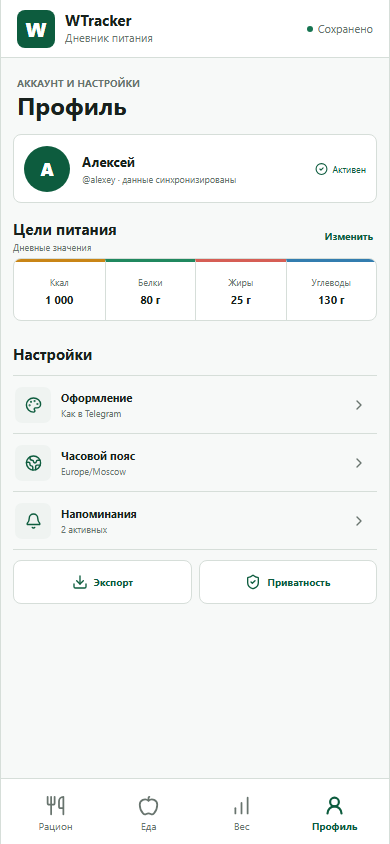
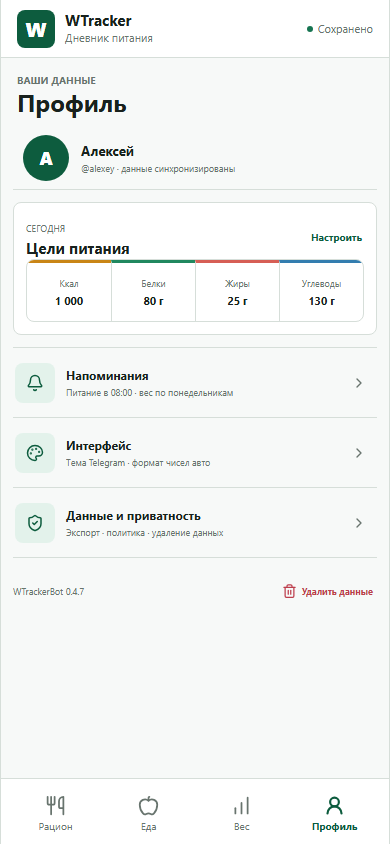
Профиль · Dark
Те же настройки в тёмной теме.
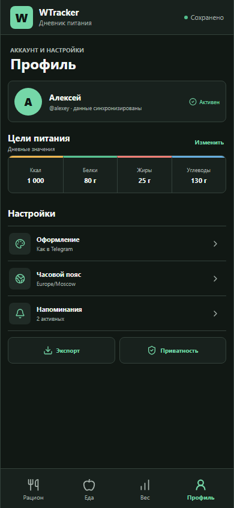
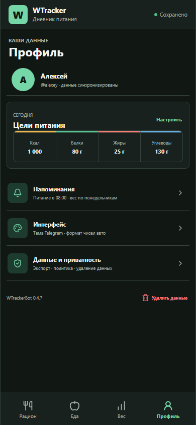